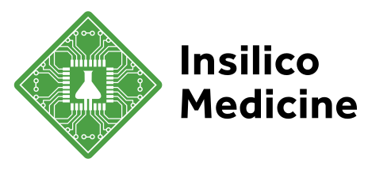

9 de septiembre
El primer fármaco diseñado con IA generativa entra a fase III.
Rentosertib, para fibrosis pulmonar idiopática: 320 pacientes en 47 centros.
2 de abril · Purolea Cosmetics Lab, Michigan
- Fabricaba productos que la FDA regula como medicamentos.
- Usó un agente de IA para escribir sus procedimientos, especificaciones y registros maestros de producción.
- La FDA encontró requisitos sin cumplir. Su respuesta: no sabía que eran obligatorios porque el agente nunca se lo dijo.
- La carta dedica una sección al uso inapropiado de IA en manufactura farmacéutica. Detuvieron la producción.